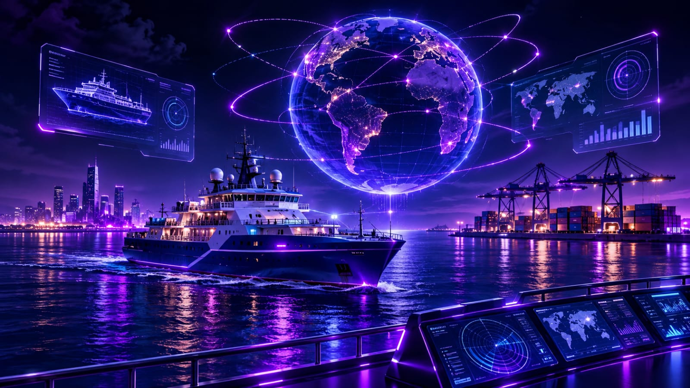
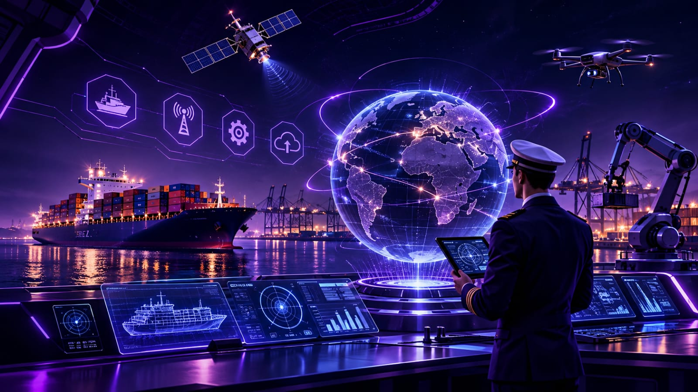

KNOWLEDGE
↗
Maritime Knowledge
Discover the academic disciplines, sciences, and professional fields that shape the maritime sector.
Explore the knowledge, science, and technology shaping the future of the maritime world. One platform. Endless possibilities.
The maritime world is more than oceans and ships. It is a vast field of knowledge, innovation, science, and discovery.
MARITERRA is a digital knowledge platform dedicated to exploring the maritime world. It brings together maritime academic disciplines, emerging technologies, and marine environmental knowledge in one organized and accessible space.
From understanding the science behind marine engineering to discovering the technologies shaping modern maritime industries, MARITERRA opens the door to a deeper understanding of our connected maritime world.
Explore knowledge. Understand technology. Discover the maritime world.
Discover the academic disciplines, sciences, and professional fields that shape the maritime sector.
Explore modern maritime technologies, intelligent systems, robotics, and digital innovation.
Understand marine ecosystems, environmental challenges, and the importance of ocean protection.
Bringing maritime knowledge, scientific understanding, and technological innovation together in one connected learning experience.
To make maritime knowledge easier to explore by presenting academic disciplines, technological developments, and marine environmental topics in a clear and organized digital space.
To build a connected knowledge space that encourages curiosity, supports learning, and helps people discover the growing relationship between maritime science and modern technology.
Explore maritime academic fields, discover emerging marine technologies, learn about the maritime world, and understand the importance of protecting marine environments.
A wider perspective on the maritime world starts with knowledge.

Discover the diverse academic fields that contribute to understanding, developing, and advancing the maritime world.

Discover how advanced engineering, intelligent systems, and emerging innovations are transforming the maritime industry.
Discover how connected digital systems coordinate vessel operations and exchange maritime information.
↗ 02 ROBOTICSExplore underwater robots, remotely operated vehicles, and autonomous marine systems.
↗ 03 NAVIGATIONUnderstand modern navigation systems, digital instruments, and intelligent maritime route planning.
↗ 04 AUTONOMYDiscover vessels that use sensors, control systems, and automation for maritime operations.
↗ 05 INTELLIGENCEExplore machine learning, predictive analytics, and intelligent systems in the maritime industry.
↗From global shipping routes and major waterways to marine ecosystems and ocean conservation, discover the many dimensions of our maritime world.
Explore ships, international shipping routes, major ports, waterways, and the global maritime network.
Explore Maritime World ↗ 02 OCEAN SCIENCEDiscover marine ecosystems, ocean science, environmental challenges, and sustainable approaches to protecting our seas.
Explore Marine Environment ↗Discover the engineering achievement and strategic importance of the Suez Canal — one of the world's most significant maritime waterways, connecting international trade routes and shaping global maritime transportation.
Explore Its Significance ↗MARITERRA is an independent digital platform built to bring maritime knowledge, academic exploration, and technological innovation together in one connected space.
Created with a vision to make the maritime world more accessible through knowledge, curiosity, and continuous discovery.